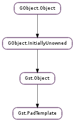

| static | new(name_template, direction, presence, caps) |
| get_caps() | |
| pad_created(pad) |
| Name | Type | Flags | Description |
|---|---|---|---|
| caps | Gst.Caps | r/w/c | The capabilities of the pad described by the pad template |
| direction | Gst.PadDirection | r/w/c | The direction of the pad described by the pad template |
| name-template | str | r/w/c | The name template of the pad template |
| presence | Gst.PadPresence | r/w/c | When the pad described by the pad template will become available |
| Name | Parameters | Return | Description |
|---|---|---|---|
| pad-created | Gst.Pad | This signal is fired when an element creates a pad from this template. |
| Name | Type | Access |
|---|---|---|
| caps | Gst.Caps | r |
| direction | Gst.PadDirection | r |
| name_template | str | r |
| object | Gst.Object | r |
| presence | Gst.PadPresence | r |
Bases: Gst.Object
Padtemplates describe the possible media types a pad or an elementfactory can handle. This allows for both inspection of handled types before loading the element plugin as well as identifying pads on elements that are not yet created (request or sometimes pads).
Pad and PadTemplates have Gst.Caps attached to it to describe the media type they are capable of dealing with. Gst.PadTemplate.get_caps () or GST_PAD_TEMPLATE_CAPS() are used to get the caps of a padtemplate. It’s not possible to modify the caps of a padtemplate after creation.
PadTemplates have a Gst.PadPresence property which identifies the lifetime of the pad and that can be retrieved with GST_PAD_TEMPLATE_PRESENCE(). Also the direction of the pad can be retrieved from the Gst.PadTemplate with GST_PAD_TEMPLATE_DIRECTION().
The GST_PAD_TEMPLATE_NAME_TEMPLATE () is important for Gst.PadPresence.REQUEST pads because it has to be used as the name in the Gst.Element.get_request_pad () call to instantiate a pad from this template.
Padtemplates can be created with Gst.PadTemplate.new () or with Gst.StaticPadTemplate.get (), which creates a Gst.PadTemplate from a Gst.StaticPadTemplate that can be filled with the convenient GST_STATIC_PAD_TEMPLATE() macro.
A padtemplate can be used to create a pad (see Gst.Pad.new_from_template () or Gst.Pad.new_from_static_template ()) or to add to an element class (see Gst.ElementClass.add_pad_template ()).
The following code example shows the code to create a pad from a padtemplate.
Create a pad from a padtemplate
GstStaticPadTemplate my_template =
GST_STATIC_PAD_TEMPLATE (
"sink", // the name of the pad
GST_PAD_SINK, // the direction of the pad
GST_PAD_ALWAYS, // when this pad will be present
GST_STATIC_CAPS ( // the capabilities of the padtemplate
"audio/x-raw, "
"channels = (int) [ 1, 6 ]"
)
);
void
my_method (void)
{
GstPad *pad;
pad = gst_pad_new_from_static_template (&my_template, "sink");
...
}
The following example shows you how to add the padtemplate to an element class, this is usually done in the class_init of the class:
static void
my_element_class_init (GstMyElementClass *klass)
{
GstElementClass *gstelement_class = GST_ELEMENT_CLASS (klass);
gst_element_class_add_pad_template (gstelement_class,
gst_static_pad_template_get (&my_template));
}
Last reviewed on 2006-02-14 (0.10.3)
| Parameters: |
|
|---|---|
| Returns: | a new Gst.PadTemplate. |
| Return type: |
Creates a new pad template with a name according to the given template and with the given arguments.